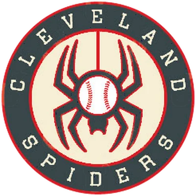

Historical player · P
Vinh McCormick
- Nickname (as stored)
- Bao
- Position
- P
- Bats/Throws
- R/R
- Major-league seasons
- 1878–1887 (10)
- Main franchise
 Cleveland Spiders
Cleveland Spiders- Status
- Retired
| Year | Team | Lg | G | PA | AB | R | H | 2B | 3B | HR | RBI | SB | CS | BB | K | AVG | OBP | SLG | OPS | WAR |
|---|---|---|---|---|---|---|---|---|---|---|---|---|---|---|---|---|---|---|---|---|
| 1878 | ? | 15 | 57 | 56 | 5 | 8 | 1 | 0 | 0 | 0 | 1 | 3 | 0 | 2 | .143 | .143 | .161 | .304 | -0.4 | |
| 1879 | Cleveland Blues | MLB | 75 | 291 | 282 | 35 | 62 | 10 | 2 | 0 | 20 | 8 | 10 | 1 | 9 | .220 | .228 | .270 | .498 | -0.3 |
| 1880 | Cleveland Blues | MLB | 78 | 303 | 289 | 34 | 71 | 11 | 0 | 0 | 26 | 11 | 11 | 5 | 5 | .246 | .266 | .284 | .550 | 0.2 |
| 1881 | Cleveland Blues | MLB | 70 | 324 | 309 | 45 | 79 | 9 | 4 | 0 | 26 | 12 | 11 | 5 | 16 | .256 | .274 | .311 | .585 | 0.2 |
| 1882 | Cleveland Blues | MLB | 70 | 272 | 262 | 35 | 57 | 7 | 3 | 2 | 15 | 8 | 10 | 2 | 22 | .218 | .229 | .290 | .519 | -0.2 |
| 1883 | Cleveland Blues | MLB | 43 | 163 | 157 | 21 | 37 | 2 | 2 | 0 | 13 | 6 | 6 | 2 | 14 | .236 | .250 | .274 | .524 | -0.2 |
| 1884 | Cleveland Blues | MLB | 49 | 197 | 190 | 15 | 50 | 5 | 4 | 0 | 23 | 7 | 7 | 1 | 11 | .263 | .275 | .332 | .606 | 0.3 |
| 1884 |  Cincinnati Red Stockings Cincinnati Red Stockings | MLB | 27 | 113 | 110 | 12 | 26 | 3 | 1 | 0 | 0 | 4 | 4 | 0 | 4 | .236 | .243 | .282 | .525 | -0.1 |
| 1884 total | 76 | 310 | 300 | 27 | 76 | 8 | 5 | 0 | 23 | 11 | 11 | 1 | 15 | .253 | .263 | .313 | .576 | 0.2 | ||
| 1885 |  Providence Grays Providence Grays | MLB | 4 | 15 | 14 | 2 | 3 | 1 | 0 | 0 | 0 | 0 | 1 | 1 | 2 | .214 | .267 | .286 | .552 | 0.0 |
| 1885 |  Chicago White Stockings Chicago White Stockings | MLB | 25 | 107 | 103 | 13 | 23 | 1 | 4 | 0 | 16 | 3 | 4 | 1 | 18 | .223 | .238 | .311 | .549 | -0.1 |
| 1885 total | 29 | 122 | 117 | 15 | 26 | 2 | 4 | 0 | 16 | 3 | 5 | 2 | 20 | .222 | .242 | .308 | .549 | -0.1 | ||
| 1886 | Chicago White Stockings | MLB | 42 | 180 | 174 | 17 | 41 | 9 | 2 | 2 | 21 | 1 | 8 | 2 | 30 | .236 | .249 | .345 | .593 | -0.3 |
| 1887 |  Pittsburgh Alleghenys Pittsburgh Alleghenys | MLB | 36 | 141 | 136 | 12 | 33 | 7 | 0 | 0 | 18 | 9 | 6 | 2 | 15 | .243 | .254 | .294 | .548 | -0.7 |
| Career | 10 seasons | 534 | 2163 | 2082 | 246 | 490 | 66 | 22 | 4 | 178 | 70 | 81 | 22 | 148 | .235 | .249 | .294 | .543 | -1.6 |
| Year | Team | Lg | G | GS | W | L | SV | CG | SHO | IP | H | ER | BB | K | HR | ERA | WHIP | K/9 | WAR |
|---|---|---|---|---|---|---|---|---|---|---|---|---|---|---|---|---|---|---|---|
| 1878 | ? | 14 | 14 | 5 | 8 | 0 | 12 | 1 | 117.0 | 128 | 22 | 15 | 36 | 0 | 1.69 | 1.22 | 2.8 | 1.8 | |
| 1879 | Cleveland Blues | MLB | 62 | 60 | 20 | 40 | 0 | 59 | 3 | 546.1 | 582 | 147 | 74 | 197 | 3 | 2.42 | 1.20 | 3.2 | 7.0 |
| 1880 | Cleveland Blues | MLB | 74 | 74 | 45 | 28 | 0 | 72 | 7 | 657.2 | 585 | 135 | 75 | 260 | 2 | 1.85 | 1.00 | 3.6 | 12.1 |
| 1881 | Cleveland Blues | MLB | 59 | 58 | 26 | 30 | 0 | 57 | 2 | 526.0 | 484 | 143 | 84 | 178 | 4 | 2.45 | 1.08 | 3.0 | 7.9 |
| 1882 | Cleveland Blues | MLB | 68 | 67 | 36 | 30 | 0 | 65 | 4 | 595.2 | 550 | 157 | 103 | 200 | 14 | 2.37 | 1.10 | 3.0 | 6.4 |
| 1883 | Cleveland Blues | MLB | 43 | 41 | 28 | 12 | 1 | 36 | 1 | 342.0 | 316 | 70 | 65 | 145 | 1 | 1.84 | 1.11 | 3.8 | 5.1 |
| 1884 | Cleveland Blues | MLB | 42 | 41 | 19 | 22 | 0 | 39 | 3 | 359.0 | 357 | 114 | 75 | 182 | 17 | 2.86 | 1.20 | 4.6 | 1.2 |
| 1884 | Cincinnati Red Stockings | MLB | 24 | 24 | 21 | 3 | 0 | 24 | 7 | 210.0 | 151 | 36 | 14 | 161 | 3 | 1.54 | 0.79 | 6.9 | 6.5 |
| 1884 total | 66 | 65 | 40 | 25 | 0 | 63 | 10 | 569.0 | 508 | 150 | 89 | 343 | 20 | 2.37 | 1.05 | 5.4 | 7.7 | ||
| 1885 | Providence Grays | MLB | 4 | 4 | 1 | 3 | 0 | 4 | 0 | 37.0 | 34 | 10 | 20 | 8 | 1 | 2.43 | 1.46 | 1.9 | -0.4 |
| 1885 | Chicago White Stockings | MLB | 24 | 24 | 20 | 4 | 0 | 24 | 3 | 215.0 | 187 | 58 | 40 | 88 | 8 | 2.43 | 1.06 | 3.7 | 2.0 |
| 1885 total | 28 | 28 | 21 | 7 | 0 | 28 | 3 | 252.0 | 221 | 68 | 60 | 96 | 9 | 2.43 | 1.12 | 3.4 | 1.5 | ||
| 1886 | Chicago White Stockings | MLB | 42 | 42 | 31 | 11 | 0 | 38 | 2 | 347.2 | 341 | 109 | 100 | 172 | 18 | 2.82 | 1.27 | 4.5 | 2.3 |
| 1887 | Pittsburgh Alleghenys | MLB | 36 | 36 | 13 | 23 | 0 | 36 | 0 | 322.1 | 377 | 154 | 84 | 77 | 12 | 4.30 | 1.43 | 2.1 | 3.5 |
| Career | 10 seasons | 492 | 485 | 265 | 214 | 1 | 466 | 33 | 4275.2 | 4092 | 1155 | 749 | 1704 | 83 | 2.43 | 1.13 | 3.6 | 55.2 |
| Year | Team | Pos | G | GS | Inn | TC | PO | A | E | DP | Fld% |
|---|---|---|---|---|---|---|---|---|---|---|---|
| 1878 | ? | P | 14 | 14 | 117.0 | 40 | 6 | 32 | 2 | 2 | .950 |
| 1878 | ? | CF | 3 | 2 | 17.0 | 5 | 3 | 1 | 1 | 1 | .800 |
| 1879 | Cleveland Blues | P | 62 | 60 | 546.0 | 167 | 39 | 119 | 9 | 4 | .946 |
| 1879 | Cleveland Blues | 1B | 4 | 0 | 29.0 | 39 | 38 | 0 | 1 | 0 | .974 |
| 1879 | Cleveland Blues | LF | 6 | 6 | 46.0 | 12 | 10 | 0 | 2 | 0 | .833 |
| 1879 | Cleveland Blues | CF | 7 | 7 | 55.0 | 14 | 10 | 1 | 3 | 0 | .786 |
| 1880 | Cleveland Blues | P | 74 | 74 | 658.0 | 193 | 36 | 135 | 22 | 3 | .886 |
| 1880 | Cleveland Blues | LF | 2 | 2 | 13.0 | 3 | 1 | 0 | 2 | 1 | .333 |
| 1880 | Cleveland Blues | CF | 1 | 1 | 5.0 | 1 | 0 | 0 | 1 | 0 | .000 |
| 1880 | Cleveland Blues | RF | 2 | 1 | 9.0 | 2 | 1 | 0 | 1 | 0 | .500 |
| 1881 | Cleveland Blues | P | 59 | 58 | 526.0 | 128 | 34 | 81 | 13 | 4 | .898 |
| 1881 | Cleveland Blues | 2B | 1 | 0 | 8.0 | 6 | 2 | 3 | 1 | 0 | .833 |
| 1881 | Cleveland Blues | 3B | 1 | 0 | 8.1 | 6 | 3 | 1 | 2 | 0 | .667 |
| 1881 | Cleveland Blues | LF | 2 | 2 | 16.0 | 4 | 3 | 1 | 0 | 0 | 1.000 |
| 1881 | Cleveland Blues | CF | 9 | 9 | 71.0 | 21 | 13 | 6 | 2 | 0 | .905 |
| 1882 | Cleveland Blues | P | 68 | 67 | 596.0 | 156 | 43 | 100 | 13 | 1 | .917 |
| 1882 | Cleveland Blues | LF | 1 | 0 | 4.0 | 0 | 0 | 0 | 0 | 0 | - |
| 1882 | Cleveland Blues | CF | 2 | 2 | 13.0 | 4 | 2 | 0 | 2 | 0 | .500 |
| 1882 | Cleveland Blues | RF | 1 | 0 | 8.2 | 0 | 0 | 0 | 0 | 0 | - |
| 1883 | Cleveland Blues | P | 43 | 41 | 342.0 | 133 | 18 | 101 | 14 | 2 | .895 |
| 1883 | Cleveland Blues | 1B | 2 | 0 | 13.0 | 12 | 10 | 0 | 2 | 2 | .833 |
| 1883 | Cleveland Blues | RF | 1 | 1 | 5.0 | 1 | 0 | 0 | 1 | 0 | .000 |
| 1884 | Cincinnati Red Stockings | P | 24 | 24 | 210.0 | 70 | 13 | 50 | 7 | 1 | .900 |
| 1884 | Cleveland Blues | P | 42 | 41 | 359.0 | 85 | 18 | 67 | 0 | 4 | 1.000 |
| 1884 | Cleveland Blues | LF | 1 | 1 | 9.1 | 2 | 2 | 0 | 0 | 0 | 1.000 |
| 1884 | Cleveland Blues | CF | 4 | 4 | 28.0 | 9 | 8 | 0 | 1 | 0 | .889 |
| 1884 | Cincinnati Red Stockings | CF | 3 | 3 | 24.0 | 6 | 5 | 1 | 0 | 1 | 1.000 |
| 1884 | Cleveland Blues | RF | 5 | 5 | 37.2 | 10 | 8 | 1 | 1 | 0 | .900 |
| 1885 | Chicago White Stockings | P | 24 | 24 | 215.0 | 78 | 20 | 54 | 4 | 3 | .949 |
| 1885 | Providence Grays | P | 4 | 4 | 37.0 | 24 | 2 | 21 | 1 | 0 | .958 |
| 1885 | Chicago White Stockings | RF | 1 | 1 | 5.0 | 1 | 1 | 0 | 0 | 0 | 1.000 |
| 1886 | Chicago White Stockings | P | 42 | 42 | 348.0 | 101 | 21 | 74 | 6 | 3 | .941 |
| 1886 | Chicago White Stockings | RF | 4 | 1 | 11.0 | 2 | 1 | 1 | 0 | 0 | 1.000 |
| 1887 | Pittsburgh Alleghenys | P | 36 | 36 | 322.0 | 109 | 13 | 88 | 8 | 1 | .927 |
| Career | P | 492 | 485 | 4276.0 | 1284 | 263 | 922 | 99 | 28 | .923 | |
| Career | CF | 29 | 28 | 213.0 | 60 | 41 | 9 | 10 | 2 | .833 | |
| Career | RF | 14 | 9 | 76.1 | 16 | 11 | 2 | 3 | 0 | .812 | |
| Career | LF | 12 | 11 | 88.1 | 21 | 16 | 1 | 4 | 1 | .810 | |
| Career | 1B | 6 | 0 | 42.0 | 51 | 48 | 0 | 3 | 2 | .941 | |
| Career | 2B | 1 | 0 | 8.0 | 6 | 2 | 3 | 1 | 0 | .833 | |
| Career | 3B | 1 | 0 | 8.1 | 6 | 3 | 1 | 2 | 0 | .667 |
League-leader finishes top 10; 9 times first
| Year | League | Category | Place | Value |
|---|---|---|---|---|
| 1879 | MLB | Wins | 6th | 20 |
| 1879 | MLB | Innings | 5th | 546.1 |
| 1879 | MLB | Strikeouts | 3rd | 197 |
| 1879 | MLB | ERA | 6th | 2.42 |
| 1879 | MLB | WHIP | 9th | 1.20 |
| 1879 | MLB | K/9 | 4th | 3.2 |
| 1879 | MLB | Complete games | 3rd | 59 |
| 1879 | MLB | Shutouts | 6th | 3 |
| 1879 | MLB | WAR (pitchers, OOTP) | 6th | 7.0 |
| 1880 | MLB | Wins | 1st | 45 |
| 1880 | MLB | Innings | 1st | 657.2 |
| 1880 | MLB | Strikeouts | 2nd | 260 |
| 1880 | MLB | ERA | 4th | 1.85 |
| 1880 | MLB | WHIP | 5th | 1.00 |
| 1880 | MLB | K/9 | 4th | 3.6 |
| 1880 | MLB | Complete games | 1st | 72 |
| 1880 | MLB | Shutouts | 2nd | 7 |
| 1880 | MLB | WAR (pitchers, OOTP) | 1st | 12.1 |
| 1881 | MLB | Wins | 5th | 26 |
| 1881 | MLB | Innings | 2nd | 526.0 |
| 1881 | MLB | Strikeouts | 2nd | 178 |
| 1881 | MLB | ERA | 6th | 2.45 |
| 1881 | MLB | WHIP | 1st | 1.08 |
| 1881 | MLB | K/9 | 5th | 3.0 |
| 1881 | MLB | Complete games | 1st | 57 |
| 1881 | MLB | WAR (pitchers, OOTP) | 3rd | 7.9 |
| 1882 | MLB | Wins | 2nd | 36 |
| 1882 | MLB | Innings | 1st | 595.2 |
| 1882 | MLB | Strikeouts | 2nd | 200 |
| 1882 | MLB | ERA | 7th | 2.37 |
| 1882 | MLB | Complete games | 1st | 65 |
| 1882 | MLB | Shutouts | 5th | 4 |
| 1882 | MLB | WAR (pitchers, OOTP) | 10th | 6.4 |
| 1883 | MLB | Wins | 9th | 28 |
| 1883 | MLB | Saves | 3rd | 1 |
| 1883 | MLB | ERA | 1st | 1.84 |
| 1883 | MLB | WHIP | 9th | 1.11 |
| 1884 | MLB | Wins | 4th | 40 |
| 1884 | MLB | Innings | 4th | 569.0 |
| 1884 | MLB | Strikeouts | 9th | 343 |
| 1884 | MLB | Complete games | 4th | 63 |
| 1884 | MLB | Shutouts | 2nd | 10 |
| 1885 | MLB | Shutouts | 10th | 3 |
| 1886 | MLB | Wins | 9th | 31 |
Seasons before 2002 are real MLB history from the OOTP export, mapped by OOTP onto this league's 30 original franchises (club names are as they were in that season). 2002 is this universe. Player names are as the export stores them (apart from a few Alexander has renamed in his game since this dump, such as Babe Ruth): OOTP gives some historical players generated names (the 586-homer career is filed under “Legendre Robinson”), and the site keeps them. Every player links to a page: 2002 players to their season pages, everyone else to a historical career page.